Welcome to Goa
Discover the beaches, churches, and vibrant culture of Goa
🏖️ Major Cities & Tourist Attractions

Panaji – The capital city known for its scenic views, casinos, and vibrant nightlife.
Vasco da Gama – A bustling port city named after the famous explorer.

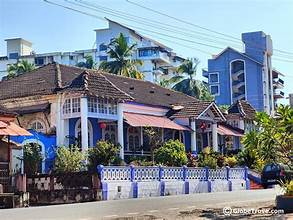
Margao – Known for its Portuguese colonial architecture and bustling markets.
Calangute – Popular beach destination known as the ‘Queen of Beaches’.
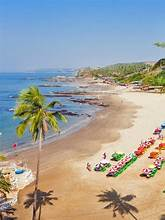
🏝️ Famous Beaches
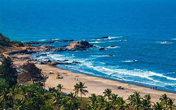
Baga Beach – A lively beach known for its vibrant nightlife and water sports.
Anjuna Beach – Famous for its flea markets and trance parties.
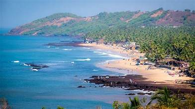

Palolem Beach – A serene beach ideal for relaxation and adventure.
Colva Beach – Known for its golden sands and coconut palms.
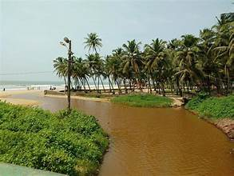
⛪ Religious Sites & Churches
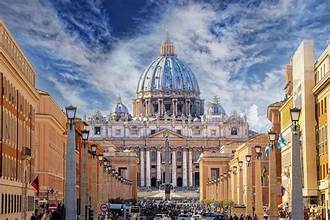
Basilica of Bom Jesus – A UNESCO World Heritage Site and famous church in Old Goa.
Se Cathedral – The largest church in Asia, dedicated to St. Catherine.
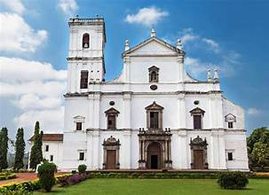
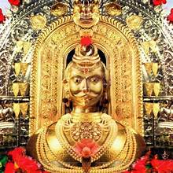
Shri Mangeshi Temple – One of the most famous and revered Hindu temples in Goa.
Shanta Durga Temple – A prominent Hindu temple dedicated to Goddess Durga.

🏰 Historical Monuments & Heritage
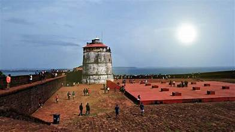
Fort Aguada – A 17th-century Portuguese fort overlooking the Arabian Sea.
Chapora Fort – Offers breathtaking views and a glimpse into Goa’s history.
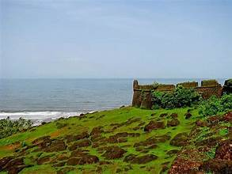

Fort Tiracol – A heritage fort with stunning views and a rich past.
Cabo de Rama Fort – Known for its historical relevance and panoramic views.
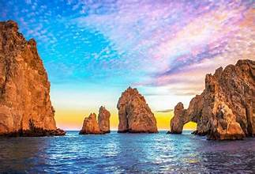
🌊 Natural Beauty & Waterfalls
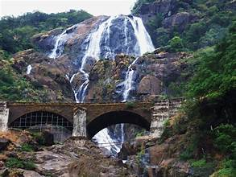
Dudhsagar Waterfalls – One of India’s tallest waterfalls with mesmerizing beauty.
Arvalem Waterfalls – A scenic spot known for its tranquil surroundings.
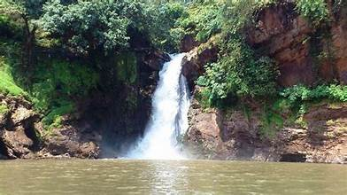